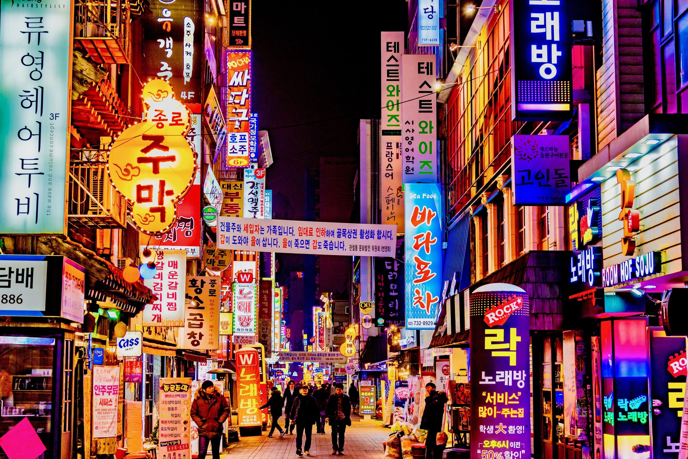

Seoul

Seoul is situated in the northwest part of South Korea on the Han River.
Seoul has the fastest average internet speed in the world.
Home to sleek skyscrapers and shopping malls, as well as well-preserved royal palaces and Buddhist
temples which will be a real sight to see.
The South Korean capital is teeming with unique culture and modern comforts.
Seoul has an extensive subway system, where notable landmarks are usually a few stops away from each
other.